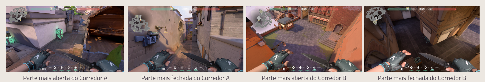
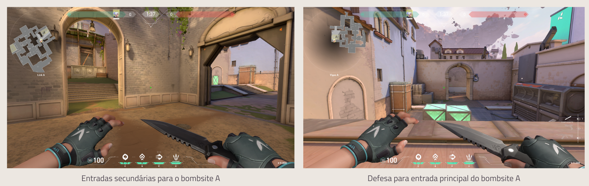

Assim como os outros mapas, Ascent também traz caminhos aos bombsites pelos flancos em corredores e a característica do meio ser um local mais aberto e propenso a trocação franca de tiros. A diferença é que o jogador se sente em um lugar muito mais amplo, principalmente pelo meio ser completamente aberto e ter ao todo quatro pontos cruciais de contato: dois nos flancos e dois centralizados em direção a cada base.
Antes de chegar aos corredores estreitos que levam aos bombsites, Ascent também traz duas rotas muito mais amplas e largas - uma em cada bombsite. Desta forma a defesa pode optar por uma trocação mais aberta em um estilo agressivo de jogo, aproveitando a sensação claustrofóbica que o ataque terá para dominar a região estreita ou então ficar nos próprios bombsites esperando o ataque.
Os bombsites de Ascent parecem mais únicos se comparados aos demais mapas. Vamos começar pelo bombsite A, o qual podemos adiantar que tem uma quantidade até exagerada de cobertura e lugares para ficar escondido. Para entrar nele será preciso um bom domínio de mapa, caso contrário, o time atacante terá problemas. Veja as visões do lado atacante e defensivo da entrada principal:
Bombsite A: Quando falamos sobre ter um bom domínio de mapa para chegar ao bombsite A, é por dois principais motivos: o primeiro é a entrada secundária do bomb, que dá acesso à parte mais alta. A segunda é que em táticas mais específicas, é possível entrar pelo meio, depois na base inimiga e finalmente a parte alta do B1.
Bombsite B: Apesar de conhecido, ele tem uma peculiaridade, que é a separação de um galpão de madeira. Esta grande estrutura que separa tudo oferece uma dinâmica diferente, pois oferece duas opções aos jogadores: 1ª: Encher a passagem e spots de smokes e rushar rápido em direção ao bombsite, praticamente ignorando o que é esta primeira parte; 2ª: Fazer um domínio em dois tempos, que é o mais recomendado quando não há muitos utilitários na equipe.
. Neste mapa é ainda mais importante ter agentes que bloqueiam a visão de passagens com smokes, como é o caso do Brimstone. Ascent é extremamente aberto e os bombsites possuem muitos covers, o que pode ser um problema para o ataque. Para diminuir este problema a solução é cancelar a visão de algumas posições e se preocupar com as demais.
. Jogue em time, mas não deixe de fazer splits. Splits são as táticas em que o time é divido para entrar por dois lados ao mesmo tempo. Esta é outra maneira da alta quantidade de covers ser menos útil, pois a defesa se preocupará com mais de uma entrada.
. Por ter corredores mais abertos e um meio extremamente amplo, é essêncial ter um bom sniper no time ao jogar Ascent.
. Quando se está na defesa, aproveite os muitos covers dos bombsites para adotar um estilo de jogo mais recuado. Não é necessário jogar avançado, a não ser que seja uma vez ou outra para quebrar o ritmo de jogo.
. Quando se está no ataque, se puder domine o meio. É possível até mesmo dominar a região de dentro dele para fazer um ataque por ali e pegar inimigos desprevinidos ou preocupados com muitas entradas.
. Faça testes. Sim, a dica é essa, aproveite que é um mapa novo e entre rapidamente em uma personalizada para fazer alguns testes. Seja de smokes, de flechas de Sova, orbes de Sage e até mesmo de pixels que combinem com seu estilo de jogo. Ter conhecimento em um mapa recém-lançado pode ser a chave da sua vitória sobre oponentes que ainda não estão muito familiarizados.
. Divirta-se. Lembre-se que, segundo a Riot, neste início o novo mapa cairá com mais frequência que os demais. Isso acontecerá justamente para os jogadores aprenderem a jogá-lo e se acostumarem com ele. Então, não fique chateado de jogá-lo muitas vezes porque você já sabe que isso acontecerá. Apenas aproveite!
Você comunica a posição dos inimigos com "ali" e "lá"? Então se liga nesse video! Separamos alguns dos apelidos que os brasileiros usam no mapa Ascent para ajudar na sua comunicação com seu time! Você chama algum desses lugares de outro jeito?